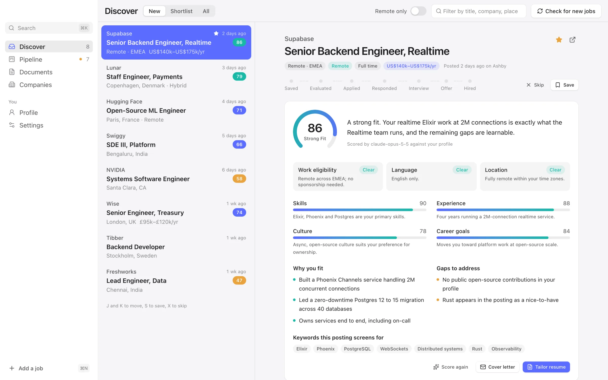
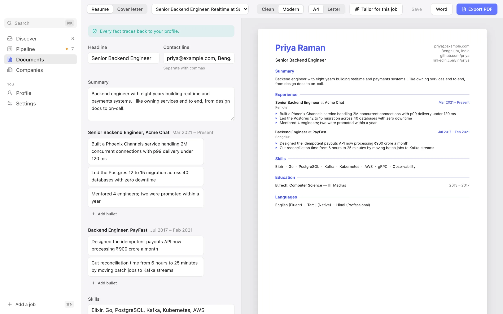
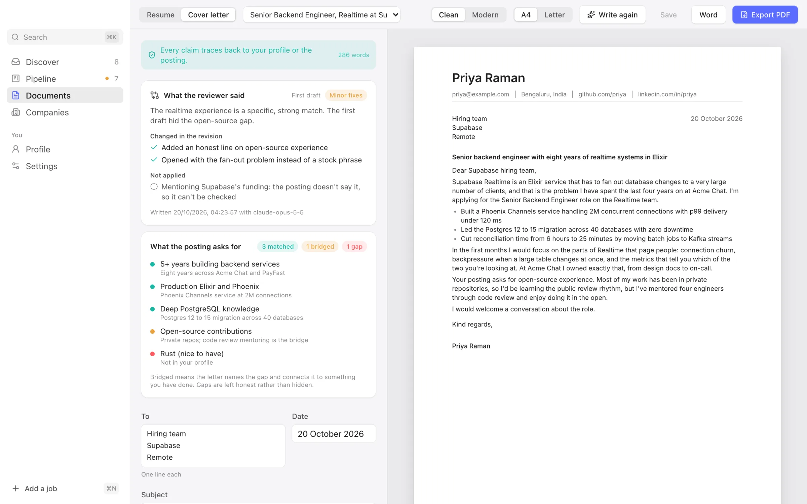
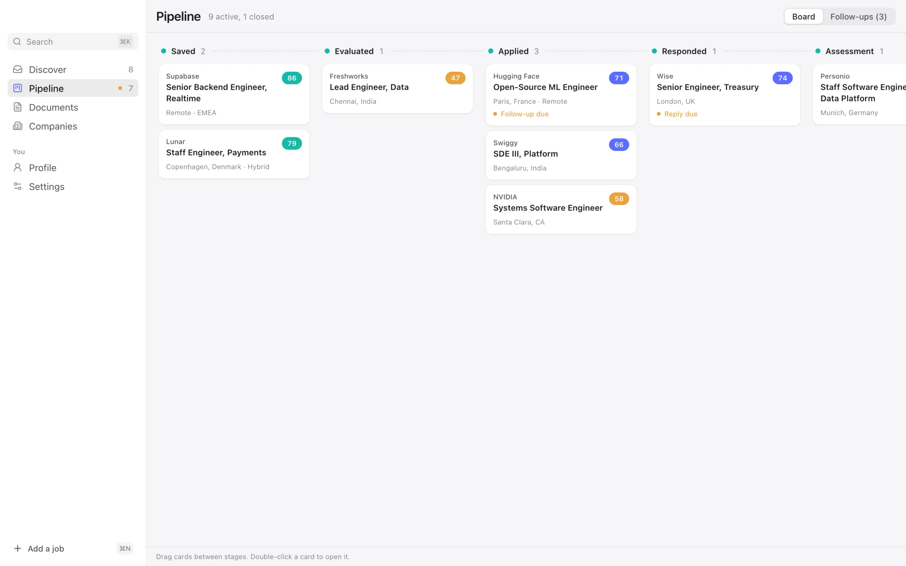
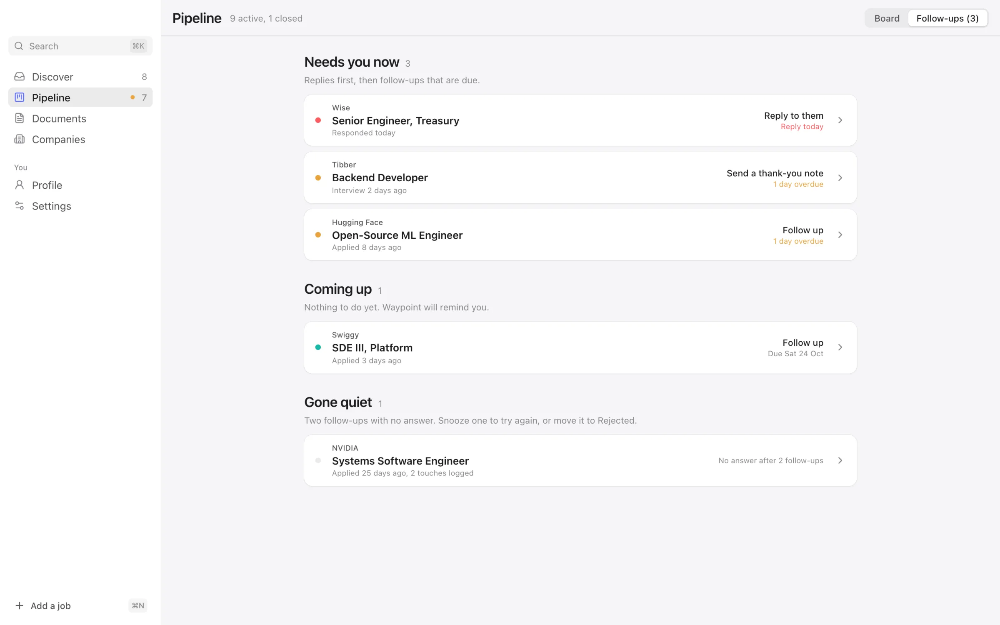

Your job search,on course.
Waypoint finds real roles on company job boards, scores how well you fit using only your own facts, tailors your resume and cover letter without inventing a thing, and tells you when to follow up.
Free for macOS, Windows and Linux. Bring your own AI key, or run fully offline with Ollama.

How it works
From first look to offer.
Every application moves along the same route. Waypoint handles the busywork at each stop, and you make every decision.
Find
New roles from the companies you follow and the searches you watch.
Fit
An honest score: eligibility first, then skills, experience, culture and career.
Tailor
A resume and cover letter for this job, built only from what's true.
Apply
You apply yourself. Waypoint never submits anything on your behalf.
Follow up
A nudge when it's time to check in, reply or say thank you.
Find
Real jobs, straight from the source.
Waypoint reads the job boards companies publish themselves, so every role is live and links to the real posting. Paste any careers page link and it works out the rest.
- Greenhouse
- Lever
- Ashby
- Workday
- SmartRecruiters
- Workable
- Recruitee
- Personio
- Teamtailor
- Remotive
- Himalayas
- Remote OK
- Hacker NewsWho is hiring
- AdzunaUS, UK, India, Europe
- ArbeitsagenturGermany
- PlatsbankenSweden
- JobnetDenmark
Ranked by fit
Your inbox puts the strongest matches first, with J and K to move and S to save.
Ghost jobs flagged
Old postings and vague, evergreen ads get a warning before you spend an evening on them.
Anything else, by hand
Found a role elsewhere? Press ⌘N, paste it in, and it joins the same pipeline.
Tailor
Tailored. Never invented.
The AI rewords and reorders your experience for each role. A fact check holds back any number, skill or title that isn't in your profile, so nothing on the page will trip you up in an interview.

Review every change
Keep a suggestion or go back to your own words, bullet by bullet.
Checked like a tracking system
The exported PDF is read back the way applicant tracking systems read it, with keyword coverage for the posting.
PDF or Word
Two clean templates, A4 or US Letter, laid out on your computer with nothing to install.
Write
Cover letters that survive a skeptical read.
A draft, then an independent review written as the hiring manager would, then a revision. You see what changed, what was turned down, and how every requirement in the posting is handled.

Track
Every application. One calm place.
Drag roles from Saved to Hired. Waypoint keeps the exact resume and letter you sent, and tells you when a follow-up is due.


Privacy
Your search stays yours.
There is no Waypoint account and no Waypoint server. Everything lives on your computer.
A local database
Jobs, your profile, notes and every document you export are stored in one file on your own disk.
Keys in your keychain
Your Claude, OpenAI or OpenRouter key stays in macOS Keychain, Windows Credential Manager or the Linux secret service.
Your own AI account
Calls go straight from your computer to the provider you pick, and a usage panel shows every token. Or use Ollama and nothing leaves at all.
Waypoint never applies for you, never logs in to LinkedIn, and never invents a fact. That's the whole point.
Download
Get Waypoint.
Version 0.1.0. Free, with no account.
macOS
Apple silicon or Intel
This early build isn't signed yet. The first time, right-click Waypoint in Applications and choose Open.
Windows
Windows 10 or 11, 64-bit
If SmartScreen warns you, choose More info, then Run anyway.
Linux
64-bit, with WebKitGTK 4.1
Make the AppImage executable with chmod +x, then run it.
To score jobs and tailor documents, add a key from Anthropic, OpenAI or OpenRouter in Settings, or install Ollama to run a model locally for free. Finding and tracking jobs works without one.